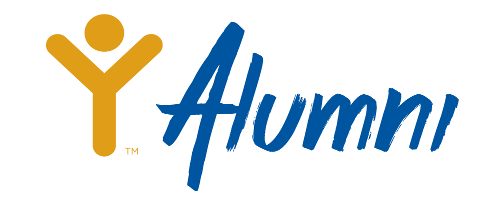
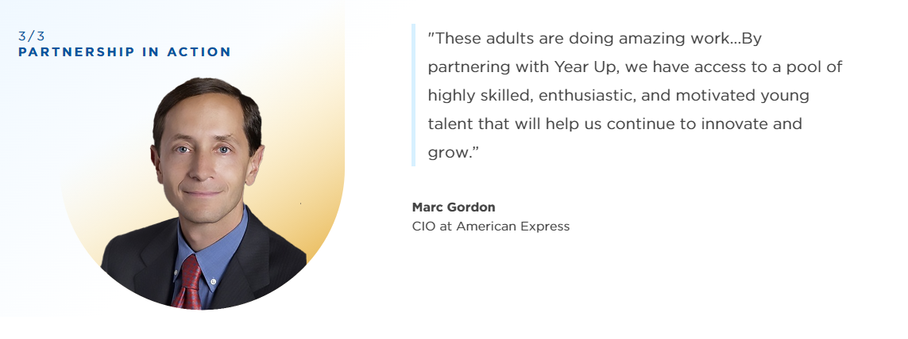
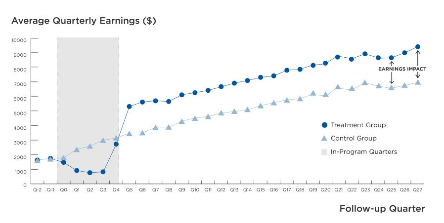
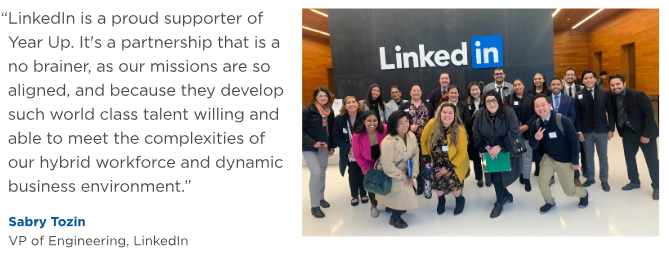
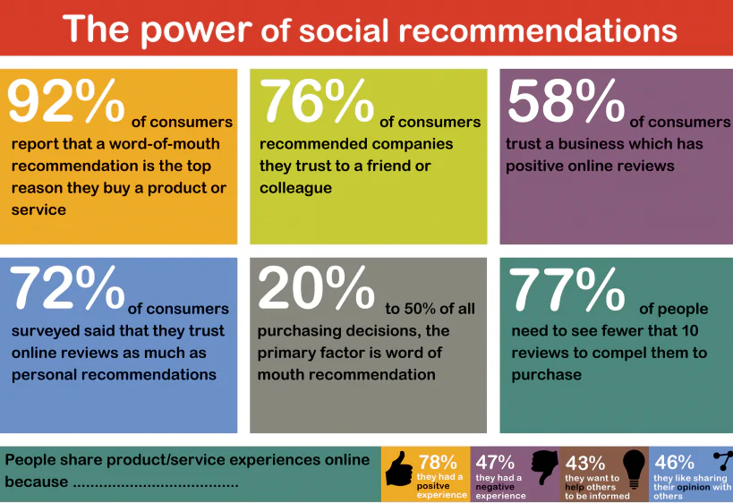
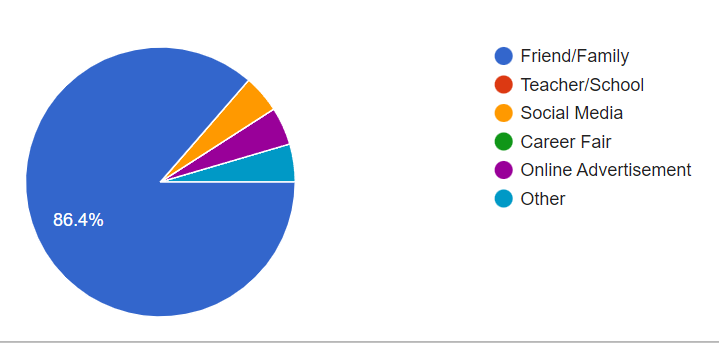
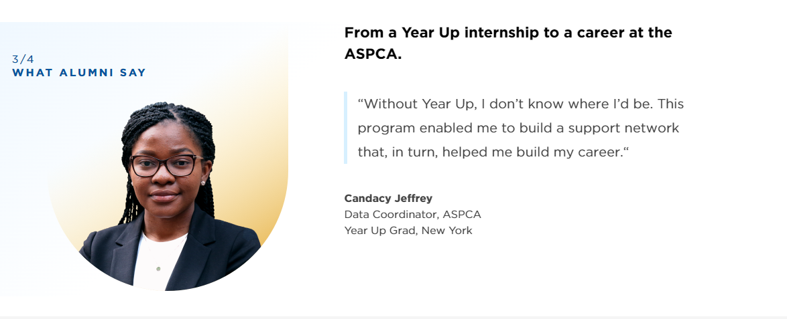
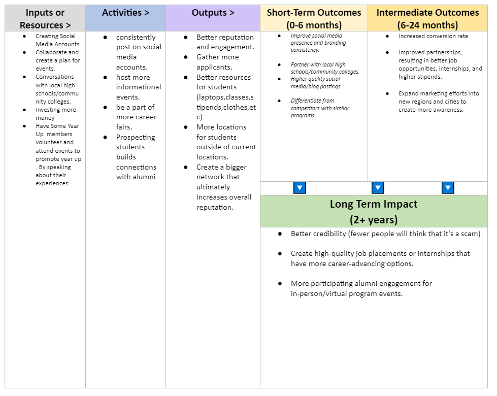

Executive Summary
This executive summary is dedicated to outlining marketing strategies employed by YearUp, a non-profit organization that strives to empower young adults with the necessary skills to support themselves in today's job market, but also to bridging the gap between opportunity divide through providing career changing choices to those who face barriers to success. YearUp should consider adopting new and improved methods of marketing, which include data-driven marketing tactics, partnerships with educational institutions, peer-to-peer referral programs, and alumni engagement. By investing into these, we will create a focus on building our reach and credibility as an organization.
YearUp will be able to further it's reach and connect with the desired target audience through the powerful use of social media tactics and leveraging the strength of each strategy to create a credible and robust network of alumni advocates to highlight the program in various aspects of marketing.
Introduction
This report heavily specializes on the overview of the marketing strategies employed by YearUp, through extremely coordinated and thought out marketing tactics, through careful consideration of improving or adding other methods to better increase the spread of YearUp. The suggestions being recommended will be displayed and highlighted through constructively well-crafted research. To dive deeper and understand the context behind the information that will help YearUp grow effectively through leveraging these marketing strategies, this report will give insight to possible approaches to achieve the desired goals.
There will be multiple recommendations to explore and cover. The first section will dig into the opportunities that lie in partnering with local educational institutions that hover around the High-School, and Community College demographics, but also open networking spaces that include high profile businesses. These partnerships leverage and improve our credibility by attracting appropriate candidates, but also spreading our resources in reputable forums. The educational institutions and networking forums are essentially a hub that signifies legitimacy.
The second recommendation dives deep into the powerful tool we call the internet. By utilizing data-driven marketing tactics in today's digital age, we are able to effectively target specific demographics and measure the effectiveness of our campaigns through numbers. This could be seen as views, likes, shares, etc. With this type of information, we can optimize and better allocate our resources for stronger impact.
The third and final recommendation ties into all this. To recognize the influence of alumni engagement through all these means of marketing. They are essentially the final product of what the organization has helped nurture and is the brand of the program. It is important for YearUp to maintain strong relationships to foster loyalty and to encourage them to come talk about the program. This can be displayed through advertisements on social media, career fairs , etc.
Discussion
YearUp's mission is to provide opportunities for young adults between the ages of 18 to 29. The results have shown that marketing is absolutely essential to this organizations success. Building and maintaing reputation is to key to prove the legitmacy of the program, but also to building long-lasting relationships with partners, alumnis and prospective students as well. It has been proven overtime that the more partners that YearUp gains the higher the average quaterly earnings increases. Below we can see that the average earning gains increased by $8,000 per year by the end of the seventh year. after graduation. Ultimately, a 30% increase. This is absolutely important as seeing that the exposure of YearUp is being acknowledged by other businesses but also the growth of YearUp Alumni's skill.
YearUp struggles when it comes to the question of its legitmacy throughout its history due to the nature that it is tuition-free and has a six-month internship at the end of L&D (Learning and Development). In a market that is seen to be going through a recession at the very moment and is extremely competitive. Below are recommendations that should be taken with consideration on better improving the program.
Recommendations
Partnering with success is the name of the game for truly expanding YearUp's mission. The impact report during 2022 has shown that
it is extremely effective in creating exposure for ourselves the more partners we collaborate with. This not only shows the potential
opportunity for prospective students , but genuinely creates a reputation that proves that YearUp's program produces strong candidates
for the competitive job market today. High-profile companies will have good words to say about our program and that help legiitimizes
the organization. Essentially, this could be taken advantage of as the companies logos can be used to advertise for any kind words they have to say for us. We can apply this to career fairs or events that help better market our mission to the high-school and community college demographics. We absolutely have to apply the same tactics we do for gaining partners to these educational institutions as well based on the success it has shown.


Peer-to-peer referral is one of the most effective marketing skills for Yearup's credibility as well. Here are some reasons why.
Incentive Structure: By developing an appealing incentive structure to motivate participants to refer others. By offering rewards such as discounts, credits, cash incentives, exclusive perks, or recognition.
Referral Tracking System: This system should assign unique referral codes or links to participants, allowing you to identify and credit them for successful referrals. This tracking system helps monitor the performance of referrers, measure the program's impact, and provide appropriate rewards.
Promote and Educate: Educate participants on the program's rules, eligibility criteria, and any terms and conditions.
- Provide Excellent Participant Experience: Communicate with them promptly, acknowledge their efforts, and provide updates on the status of their referrals.A positive participant experience encourages ongoing engagement and increases the likelihood of continued participation and referral activity.
These data points will be useful in determining business choices YearUp could take as well.
The key to Peer-to-Peer referral is that people trust recommendations closest to them. Our data below demonstrates that a large percentage of those who hear from a family or friend are generally those they trust the most. For the most part, most people would assume a commercial is biased but hearing it from someone you recognize and trust leads to people being prone to believing their recommendations.
Statistics show that over 92% of consumers are influenced by their peers while shopping.
81% of US consumers are influenced by what their friends share on social media.
These numbers can and charts show the influence and leverage that peer recommendations has. People tend to follow trends and this could be used as advantage to create incentives for people to look more into YearUp's Program.
Data-driven marketing refers to the practice of utilizing data to inform marketing strategies and decisions. This enables businesses to target specific audiences by personalizing messages leading to optimized marketing efforts and the ability to measure performance effectively. By leveraging data from various sources, such as customer demographics, behavior, and preferences, organizations can gain valuable insights that drive more targeted and effective marketing initiatives, resulting in improved customer engagement, conversion rates, and overall marketing success. YearUp conducted a survey where they asked alumni how they heard about the program. In that survey, 86.4% of the participants found about YearUp from a friend or family, 1% from social media, 1% from online advertising, and 1% from other sources. This data suggests that YearUp should focus its marketing efforts more on social media platforms, online advertising, and in-person events such as career fairs. This will lead to YearUp having a greater reach to other audiences which in turn will increase the number of applicants and increase the credibility of the program.
Conclusion
In conclusion, this report successfully highlights key aspects of YearUp's marketing strategies that aim to empower young adults and bridge the oppourtinity divide by introducing young adults to newfound skills and resources while expanding its reach and credibility. The recommendations emphasized the strong ability to read trends and apply targeted advertising through data analysis proves the leverage the digital world holds. Not only this, partnering with local educational institutions strengthens YearUp's credibility and gives access to strong prospective emerging professionals.
To add on, Alumnis are essential the core of attraction as that is what everyone aspires to be when hearing and participating in the program. They can be highlighted through a multitude of marketing channels as social media, career fairs, virtual meetings and so forth.
By implementing these strategies, a storm is bound to come and YearUp will significantly improves its standing as a organization that shouts its mission to change young adults into profesionals.
References
2022 YearUp Impact Report. (n.d.). https://indd.adobe.com/view/ab7d8f85-a0c9-47eb-b585-1f088352fdf8
References: Becker, N. (2023). Peer to Peer Marketing: The Complete Guide for 2023 +Examples. P2P Marketing. https://peertopeermarketing.co/peer-to-peer-marketing-guide/
says:, B. B., says:, A., says:, W. O., says:, M., says:, B., says:, A. H., says:, N. A., says:, S. B., & says:, M. B. (2023, January 19). 85 influencer marketing statistics you should know in 2023. Shane Barker. https://shanebarker.com/blog/influencer-marketing-statistics/
Market force study shows companies wield comparable social media influ. PRWeb. (2012, May 1). https://www.prweb.com/releases/socialmedia/retail/prweb9456629.htm#:~:text=The%20study%20found%20that%2081,powerful%20in%20driving%20purchase%20decisions.
Appendix
